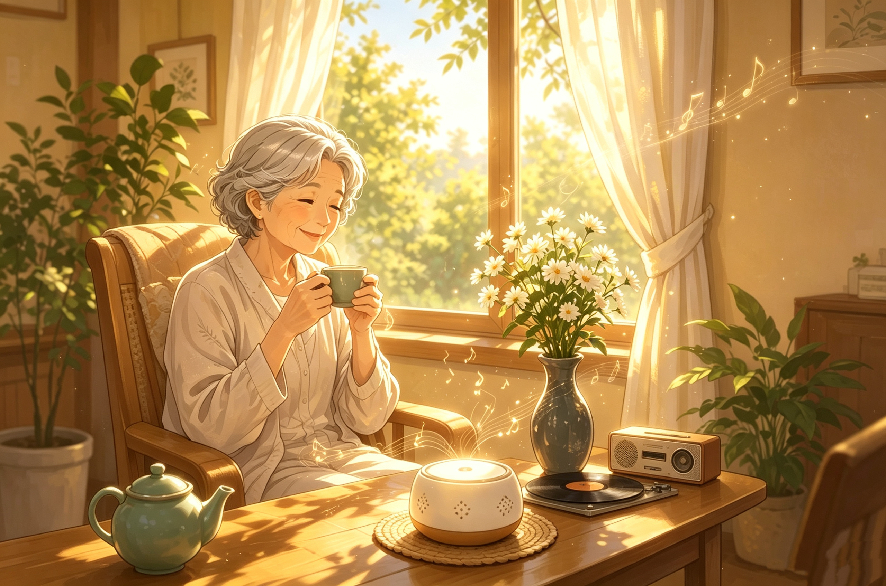

五音疗愈
小五 · 您的疗愈伙伴
音通五脏 · 情顺自然
跳过

随时·开启疗愈
想疗愈时打开
小五陪您慢慢来
WU YIN · HEALING
五音疗愈伙伴
五
奶奶
早上好呀
谷雨 · 4月19日
WED 21°C
今日谷雨 · 宜养肝疏郁 · 角音当令
小五在线 · 早晨模式
昨夜睡眠不太稳定，听羽音能帮您哦…
我的情志档案
›当前偏向怒·角，建议今日听角音疏肝
42%
中医五态情志问卷
已完成 35 / 84 题 · 每月更新一次
五 音 疗 愈
睡不着怎么办
推荐音乐
我的档案
点击说话
今日疗愈
五音调和
—
为您推荐
五音调式
角音 · 疏肝
翠竹疏肝 · 万物生发
徵音 · 养心
夏木繁茂 · 热烈蓬勃
宫音 · 健脾
黄土厚德 · 化生万物
商音 · 润肺
金风玉露 · 一叶知秋
羽音 · 滋肾
寒泉凝润 · 沉静悠远
情志档案
您的心境
—
近期情志偏向
尚无数据
完成情志测评或与 AI 对话后，将在这里汇总呈现。
情绪关键词
近 30 天对话中提到的情绪
开始聊天后，您的情绪关键词将在这里呈现
0
聆听次数
0
日记条数
0
连续天数
健康工具
五态情志
疗愈画卷
历史数据
情志测评历史
重新测评后，旧的测评结果将归档在此
近期日记
小五的伙伴
已坚持疗愈 0 天
0
聆听
0
日记
0
连续
0
画卷
偏好
长辈模式
消息提醒
每日提醒
每日 09:00
声音 · AI
声音设置
粤语女声
AI 密钥
未设置
五态情志问卷
未测评
疗愈
情绪档案
查看趋势
疗愈画卷
完成度 0/5
语音唤醒
未开启
家庭关爱圈
邀请家人
系统
隐私协议
使用帮助
退出登录
家庭关爱圈
邀请子女关注您的疗愈进展，让他们了解您的身心健康状态。
您的邀请码
382947
已绑定家人
小芳女儿
最近查看：2小时前
五态情志测评
5 轮小测，答完即得专属五音情境疗愈方案
喜·怒·忧·思·恐
稍后再说
您也可以尝试其他调式
每种调式对应不同脏腑与情志，可多选组合
疗愈时长
启程
深入
沉浸
回归
0:00
5:00
点击音符开始疗愈，左右滑动观赏风景
恭喜完成第1轮！
解锁【角音】试听体验


感觉如何？心情有没有放松一些？